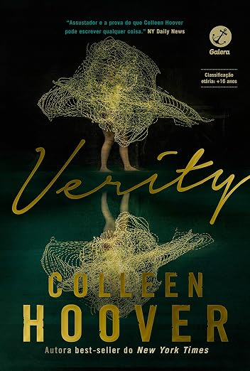

Verity

"Eu manipulo a verdade quando considero adequado. Sou escritora"
Verity acompanha a história de uma escritora que recebe a oportunidade de dar continuidade á obra de uma autora famosa que está em estado vegetativo após um acidente. Ao investigar seus materias, acaba encontrado revelações que tornam cada vez mais difícil distinguir a verdade da mentira.
Desde o começo do livro você sente aquela sensação que tem algo de errado. As minhas opiniões foram mudando a cada página, e a curiosidade para descobrir oque estava acontecendo foi o que mais me prendeu nessa leitura. A incerteza continua mesmo depois de terminar o livro, e isso foi oque mais gostei. A única certeza que tive nesse livro é que todos ali são um bando de loucos.
Jantar secreto
"Um homem entra em um restaurante que vende carne de gaivota. Ele pede a carne, come, vai para a casa e se mata. Por quê?"
Um grupo de amigos que se muda para o Rio de Janeiro acaba se envolvendo em um négocio clandestino que começa a tomar proporções cada vez mais pertubadoras. O que parece uma solução para seus problemas financeiros acaba levando os amigos a situações extremas.
Durante boa parte da leitura, senti um desconforto pela maneira como se parece próxima demais com a realidade, ao mesmo tempo a curiosidade para descobrir até aonde eles iriam me fez continuar lendo. Quando você pensa que não pode piorar, vem um plot twist daqueles. É uma leitura que nos faz pensar sobre até onde alguém pode chegar quando ultrapassa seus próprios limites.